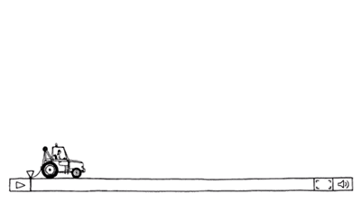

视频插帧的方案实现与对比
原文出处：Frame Interpolation
对于视频网站、电视厂商以及进行视频压制的用户来说，改变视频的帧率算是一个比较常见的需求。视频网站改变帧率主要是为了向不同级别的网站用户提供差异化服务；电视厂商则是以提供更好的显示效果作为电视的卖点；对视频压制有所研究的用户会为了更好的显示效果而追求更高的帧率，或者为了更高的压缩率而选择更低的帧率。
帧率的变化能分为两种：低帧率变为高帧率；高帧率变为低帧率。虽然两者出于不同的需求，但是采取的是同一实现方式。一般来说，视频中相邻的两帧之间有相同的时间间隔，例如帧率为24的视频的相邻两帧之间的间隔为1/24秒，帧率为60的视频的相邻两帧之间的间隔为1/60秒。如果要把帧率为24的视频转换为60的帧率，则需要通过位于0，1/24，2/24，…秒上的帧来构造出位于0，1/60，2/60，…秒的帧；如果要把帧率为24的视频转换为10的帧率，那么则需要构造分别位于0，1/10，2/10，…秒的帧。本质上说，提高帧率以及降低帧率同样都是构造出不存在于源视频上的帧，两者只存在构造的帧的数量上的差别。

构造不存在的帧，我们称之为插帧（Frame Interpolation），插帧有三种实现方式：
- Duplication，复制相近的帧。
- Blend，用相邻的两帧进行混合。
- Motion Interpolation，结合图像运动来构造中间帧。
下面对比了这三种不同的实现方式的插帧效果，把每秒15帧的视频插帧成每秒30帧：
每秒播放1帧可以明显看出采用不同实现方法的时不同表现
下面分析三种不同实现方式的具体实现。
Duplication
输出的时间节点上的帧，就是我们需要生成的帧，此处称之为中间帧。在生成当前的中间帧的过程中涉及到两个输入帧，分别为小于输出时间并且最接近该输出时间的输入帧（假设为第n帧），以及大于输出时间并且最接近该输出时间的输入帧（假设为第n+1帧），我们可以称它们为参考帧。从这两个参考帧中选取时间上最接近中间帧输出时间的一帧，对这一帧进行复制，作为当前的中间帧进行输出。
Blend
与前面Dup的讨论相同，中间帧也涉及到左右相邻的两个参考帧，不过blend的实现是把这两个参考帧按照一定方式进行混合。混合方式就是分别为两帧分配一个权重（或者称之为透明度，不透明时权重为1，完全透明时权重为0），两帧的各个像素在乘上各自的权重后进行相加，即可得到中间帧对应位置上的像素值。
这两个权重应该满足两个条件：
- 两个权重应该为[0,1]区间上的数值，并且两者相加等于1。
- 距离中间帧远的帧的透明度更高，即权重更小；距离中间帧帧近的帧的透明度更低，即权重更大。
如此一来，利用中间帧与其左右相邻的参考帧在时间上的关系就能计算出这两个参考帧的权重。假设中间帧与参考帧之间在时间上有以下关系
左边的参考帧的权重应该为(L-α)/L，右边的参考帧的透明度应该为α/L。两个参考帧乘上各自的权重后相加即可得到中间帧。
Motion Interpolation
一般来说，视频中相邻两帧的时间间隔很短，因此如果这两帧中的内容的变化较小（在场景切换的时候，或者说两帧中的内容变化较大时，直接复制前一帧进行输出即可），我们可以把两帧中内容的变化看作线性运动。如果能够求出该线性运动的运动轨迹，就能根据该运动轨迹以及输入输出帧的时间关系来进行内容位置的调整，这种实现方法被称为运动内插（Motion Interpolation）。这种利用物体的运动对视频进行插帧的方法会使得插帧后的视频显得更为流畅。
当然，视频中的内容复杂，并不能单纯地认为一个运动的物体的所有部分都是朝一个方向做线性运动，但是如果把视频分成小块，那么就把运动的物体分解成了一块块运动的色块，对于这些色块，我们则可以认为它们是做线性运动的。（下图为各个16x16大小的块的运动向量）
由于我们此处认为这些小块是线性运动的，因此可以根据时间关系得到中间帧上的小块与参考帧的对应小块之间的运动关系（运动向量）。
通过运动向量可以定位到参考帧的两个参考块，以及中间帧上所需要生成的块的位置，然后就采用类似于上述blend的方法对块进行合成。当把帧内的所有块都执行完合成操作后，就能得到所需的运动内插的帧。
运动向量搜索
按照前面的描述，在构造中间帧之前，必须先求出两个参考帧之间各个块的运动向量，这需要把一个参考帧作为「当前帧」，另一个参考帧作为「参考帧」。参考上图，在求运动向量时，我们把序号为n的帧当作「当前帧」，把序号为n+1的帧当作「参考帧」。
运动向量搜索就是把「当前帧」分割成小块，并顺次从「参考帧」中搜寻各个小块的最优匹配块，这与视频编码时的运动向量搜索是基本一致的，在搜索时可以选择各种各样的搜索算法。
此外还有一种运动向量搜索方案，该方案以中间帧为基准，把中间帧分割成小块，顺次地把这些小块当作「当前块」进行运动向量搜索。这种搜索方案要求：对「当前块」求的所有运动向量都需要通过「当前块」，即以「当前块」为中心。具体是把「当前块」作为中心点(0,0)，如果运动向量为(x, y)，那么「当前帧」上的块的相对位置为(-xα/L, -yα/L)，「参考帧」上的块的相对位置为(x(L-α)/L, -y(L-α)/L)。
这种方案在计算运动向量上会增加额外的消耗，为了减少这种消耗，在实际实现的时候可能会假设中间帧位于两个参考帧的正中间，并以此去求运动向量，求得的运动向量会被当作穿过实际中间帧上的「当前块」的运动向量，该运动向量在进行运动补偿时会按照中间帧的实际位置分割运动向量。如下图，可见「当前帧」（n）中的块与「参考帧」（n+1）中的块都存在了一定程度的偏移，即进行运动向量搜索时采用的两个块并非后续进行运动补偿的两个块，这需要我们采取一些补救措施。
运动补偿
我们把通过运动向量来得到源块并生成目标块的这一过程称为运动补偿（motion compensation）。根据上方两种不同的运动向量搜索方式，分别有两种不同的运动补偿方案。
如果采用上述第一种运动向量搜索方案，在运动补偿时时，会以这两个参考帧以及中间帧之间的时间关系来对运动向量进行分割，分割点就是插帧生成的块的位置，如下图
如果采用上述第二种运动向量搜索方案，在运动补偿时，是中间帧上的各个块就是插帧生成的块的位置，如下图
对比两个中不同方案：
- 在进行运动向量搜索时，方案一相对于方案二节省了运动向量的计算的消耗。
- 在进行运动补偿时方案一无法保证完全填充中间帧，因此总会出现未填充区域，而方案二则可以完全覆盖整个中间帧。
- 方案一如果为了节省运动向量搜索时的消耗而采取我们前面所说的优化处理，则会导致执行运动补偿的块并非运动向量搜索时得到的块。
为了提高方案二对中间帧的覆盖率，以及提高方案一中运动向量搜索所得的块与运动补偿的块之间的相关性，我们在保持块位置不变的情况下把块的宽高提升为两倍。例如，原本各个块的大小为16x16，原本各个块的位置位于(0, 0), (0, 16), (0, 32),…,(16, 0), (16, 16), (16, 32), … 提升后的各个块的大小为32x32，即在运动向量搜索以及运动补偿的时候块的大小都是32x32，但是各个块的位置不变。
此时无论是方案一还是方案二，在执行运动补偿的时候都会出现生成的块之间相互覆盖的情况，但是这并非我们需要的效果，我们可以为一个块中的各个像素分配一个权重，在进行运动补偿的时候就可以按照这个权重对相互覆盖的块的像素进行混合。通常为了更好的显示效果，混合的像素应该平滑地过渡，因此越靠近块的边缘的像素应该权重更小，越靠近块的中心的像素的权重更大。
最后，对于方案一，即使提高了中间帧的覆盖率，但是还是很有可能出现无法覆盖的区域，对于这种区域，只能用两个参考帧的对应位置上的像素来进行混合。
其它优化措施
对于方案一，上面的描述只采用了单向运动预测，采用双向运动预测可以有更高的中间帧覆盖率，在实现的时候只需要把序号为n+1帧作为「当前帧」，序号为n的帧作为「参考帧」。
对于方案二，在运动补偿的时候由于各个块之间的重叠区域是固定的，因此我们可以去比较重叠区域之间的cost来调整重叠区域的权重。
为了进行更精确的运动补偿，我们可以对运动向量进行分类。我们把相差不大的运动向量的块归为一类，把一类看作一个内容，如果相邻的块的运动向量相差较大，则表明相邻块并非位于同一个内容之中，而是处于两个内容之间的边界，对于这种情况，可以采用更小的块来进行小范围的搜索，以求得更准确的运动向量，从而在运动补偿的时候也能生成更准确的块。